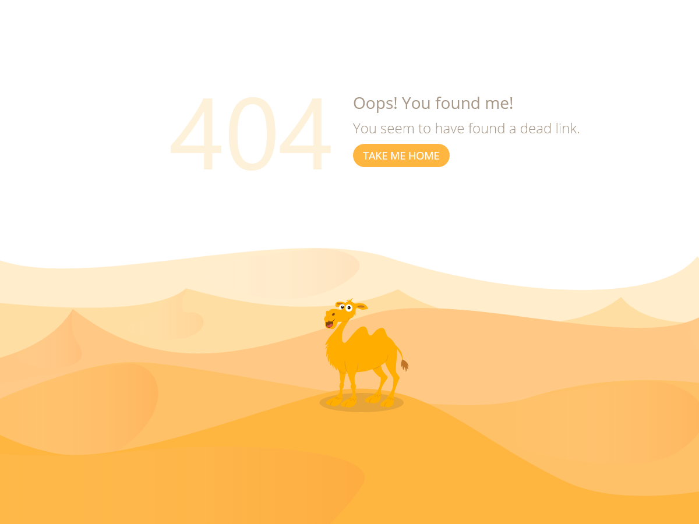

{{ template "header_sec.html"}}


<a style="
    text-decoration: none;
    top: 27vh;
    position: absolute;
    left: 50vw;
    width: 14rem;
    height: 2.5rem;
    background-color: #feb641;
    text-align: center;
    border-radius: 24px;
    font-weight: bold;
    color: #a99989;
    border: white;" href="/">Go Back</a>

{{ template "footer_sec.html"}}